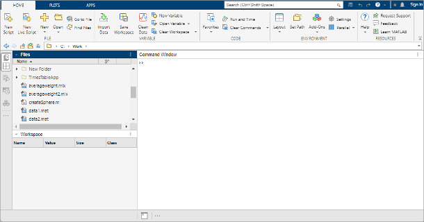

Desktop Basics
When you start MATLAB®, the desktop appears in its default layout.

The desktop includes these areas:
Files panel — Access your files.
Workspace panel — Explore data that you create or import from files.
Command Window — Enter commands at the command line, indicated by the prompt (
>>).Sidebars — Access tools docked in the desktop and additional panels.
As you work in MATLAB, you issue commands that create variables
and call functions. For example, create a variable named a by
typing this statement at the command line:
a = 1
MATLAB adds variable a to the workspace
and displays the result in the Command Window.
a =
1Create a few more variables.
b = 2
b =
2c = a + b
c =
3d = cos(a)
d =
0.5403When you do not specify an output variable, MATLAB uses
the variable ans, short for answer,
to store the results of your calculation.
sin(a)
ans =
0.8415If you end a statement with a semicolon, MATLAB performs the computation, but suppresses the display of output in the Command Window.
e = a*b;
You can recall previous commands by pressing the up- and down-arrow
keys, ↑ and ↓. Press the arrow keys either at an empty
command line or after you type the first few characters of a command.
For example, to recall the command b = 2, type b,
and then press the up-arrow key.